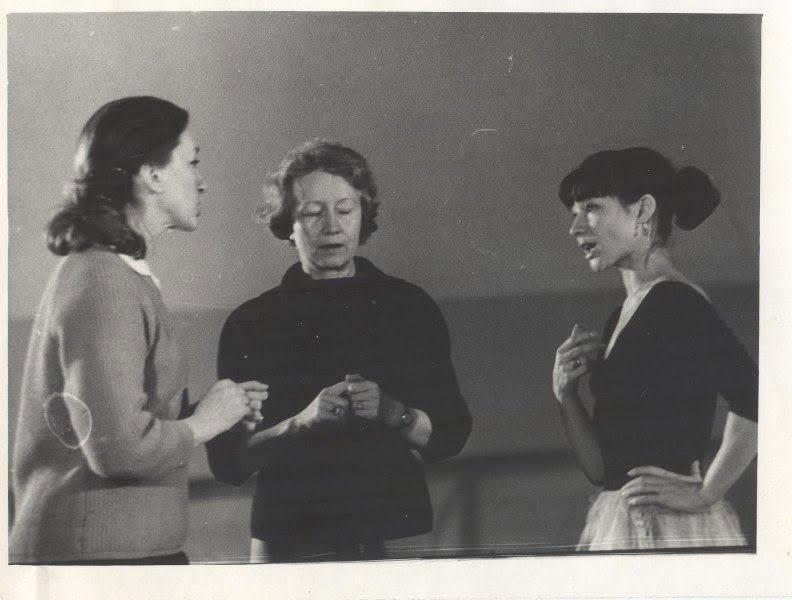

Klinite na lica balerina da biste mogli saznati njihovu detaljnjiju biografiju!
| Datum | Vrijeme | Predstava | Scena |
|---|---|---|---|
| 15. decembar | 19:00 | Labudovo jezero | Istorijska scena |
| 18. decembar | 19:00 | Krcko Oraščić | Istorijska scena |
| 22. decembar | 19:30 | Žizela | Nova scena |
| 27. decembar | 18:00 | Uspavana lepotica | Istorijska scena |